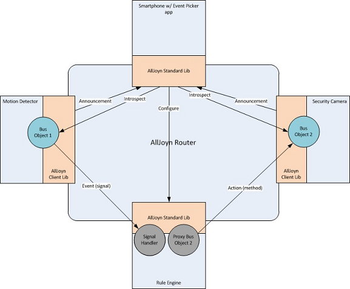

Events and Actions API Guide
Overview
The AllJoyn™ Events and Actions feature enables the ability for the discovery of signals and methods that can be understood by an end consumer in a user interface. An Event is made up of attaching a human readable description to a Signal. An Action is made up of attaching a human readable description to a Method.
This feature/function allows a UI-based application to discover and list Events and Actions in a user interface, and dynamically create a handler for the signal (event) to invoke the method (action) on the respective devices. The information found can also be used to set a rule in an application with the ability to listen for events and perform actions, if an application supports this ability. The rule application provides the best user experience when it is always running and connected to the user's home network.
Architecture
The following figure illustrates one possible basic Action/Event environment that can be built with the Actions and Events feature.

Figure: Events and Actions feature sample architecture
Events and Actions sequence flow
The following steps detail the end-to-end flow involving the Events framework, Actions framework, and Event Picker application. The flow assumes the following:
- Devices that support the Events interface have been onboarded onto the AllJoyn framework and are therefore discoverable on the associated Wi-Fi network.
- Devices that support the Actions interface have been onboarded onto the AllJoyn framework and are therefore discoverable on the associated Wi-Fi network.
-
Human readable descriptions have been created as part of the software on the devices to be returned in the introspection XML. These can be created by the OEM, standardized descriptions provided by the AllSeen Alliance can be used.
-
A device with the Event Picker application installed discovers other devices on the network that support the Events interface. The device's UI presents a list of those devices such as TV, washer, and thermostat.
- The Event Picker application introspects the Events interface on the devices listed in the UI, and presents a list of human readable descriptions in the UI. Example descriptions include TV is on, Washer cycle complete, and Thermostat cooling.
- The device with the Event Picker application installed discovers devices on the network that support the Action interface. The device's UI presents a list of those devices such as Kitchen Lights.
- The Event Picker application introspects the Action methods on the devices listed in the UI, and presents a list of human readable descriptions in the UI. The events (TV is on, Washer cycle complete, Thermostat cooling) are paired with a corresponding action that can be completed for that device. Examples include Turn light on, Turn light color to blue, Blink light three times.
- The user can select an event and select an action to map the two. This pairs the event and the action, creating a rule the user wants to have occur.
AllJoyn Interface Overview
This section walks through an AllJoyn interface and briefly explains the components. This is not intended to be a replacement for understanding how to build an interface and design one, but just to set the stage on how Events and Actions fit into the core AllJoyn software.
Interface structure
AllJoyn interfaces are defined as XML and contain specific tags that represent the definition expressed. Every interface has a <node> tag that indicates the object path in which the defined interfaces exist. Inside a <node> tag contains the list of interfaces defined in <interface name="SOME_NAME"> tags. These interfaces define the specific functionality that are exposed.
<node> tags can be nested; when no name is supplied, the default is "/".
Methods, Signals, and Properties
Methods, Signals, and Properties make up the definition of the interface for its functionality.
- A method is defined by a
tag, Signals and Properties . - The <method> and <signal> tags allow for <arg> tags to be contained that define the arguments.
- A property does not accept arguments as it is only a single type.
Example interface XML
<node>
<node name="child"/>
<interface name="com.example.LightBulb">
<method name="ToggleSwitch">
<arg name="brightess" type="i" direction="in"/>
</method>
<signal name="LightOn" sessionless="true">
</signal>
<signal name="LightOff" sessionless="true">
</signal>
<property name="LightState" type="y" access="read"/>
</interface>
</node>
org.allseen.Introspectable Interface
To allow the ability to maintain backwards compatibility with DBus, a new Introspection interface was created to allow for the return of descriptions as well as understanding if a signal is sessionless or requires joining a session in order to receive the signal.
Interface org.allseen.Introspectable
The org.allseen.Introspectable interface provides access to the introspection XML containing the description attributes. The following subsection detail the interface's methods and properties.
<interface name="org.allseen.Introspectable">
<method name="GetDescriptionLanguages">
<arg name="languageTags" type="as" direction="out"/>
</method>
<method name="IntrospectWithDescription">
<arg name="languageTag" type="s" direction="in"/>
<arg name="data" type="s" direction="out"/>
</method>
</interface>
GetDescriptionLanguages
Return the aggregate of the languages for which this object has descriptions.
For example, if an object implements two interfaces, X and Y (X has all of its members described in English (en) and French (fr) and Y has some descriptions in English (en) and Chinese (cn)), this method returns ["en", "fr", "cn"].
NOTE: The language tags must comply with IETF language tag standards.
IntrospectWithDescription
This method returns the introspection XML with descriptions in the specified language (exact match only - no best match).
If an element, such as a method, does not have a description in that language, then a language tag determined by the implementer of the introspected device will be used. This provides the following benefits:
- It allows the ability to provide a "default" language so that devices/applications that support Events and Actions will always be visible to a consumer.
- A device manufacturer can provide a closest language algorithm to adjust the default to a language that is close to the requested one.
For example, if a device supports English ("en") and Spanish ("es"), and the requested language is Portuguese ("pt"), it is better to return Spanish as it is Latin-based and may share some common words.
NOTE: The AllJoyn library does not provide IETF language tag matching logic.
Sample introspection XML
The following is a sample of the XML that is returned by IntrospectWithDescription; it adds the description to the LightOn signal which creates a LightOn Event.
<node>
<description>Your lightbulb</description>
<node name="child">
<description>Some helpful description</description>
</node>
<interface name="com.example.LightBulb">
<description>Provides basic lighting functionality</description>
<method name="ToggleSwitch">
<description>Invoke this to toggle whether the light is on or off</description>
<arg name="brightess" type="i" direction="in">
<description>A value to specify how bright the bulb should illuminate</description>
</arg>
</method>
<signal name="LightOn" sessionless="true">
<description>Emitted when the light turns on</description>
</signal>
<signal name="LightOff" sessionless="true">
<description>Emitted when the light turns off</description>
</signal>
<property name="LightState" type="y" access="read">
<description>The current state of this light bulb</description>
</property>
</interface>
</node>
Setting Descriptions (Standard Core Library)
This section provides usage instructions on the APIs that have been added to the AllJoyn Standard Core Library. These APIs provide the ability to add the introspection descriptions to AllJoyn BusObjects and interfaces. The APIs provide mechanisms for providing these descriptions in multiple languages.
API concepts
As mentioned above, human readable descriptions document BusObjects and interfaces hosted by an AllJoyn service framework. Each description can be offered in multiple languages denoted with an IETF language tag, for example, "en" for English.
Set descriptions for a single language
To provide your descriptions in a single language, use the APIs on the BusObject and interfaces to set the description and its associated language tag.
In all cases where only a single language is set, this string will be returned to an application that asks for descriptions.
Set descriptions for multiple language tags
To provide descriptions in multiple languages provide one or more Translator implementations. The job of the Translator is to translate the descriptions set on the BusObjects and interfaces. Translators may be specific on a BusObject or interface, or global in the BusAttachment.
When generating the introspection XML for each BusObject or interface, the description text is chosen using the following logic:
- The BusObject or interface's own Translator overrides the BusAttachment's Translator.
- A Translator is given priority on providing the translation. For instance, if the BusObject's description is "Turn on the lights" in "en", even if "en" is being requested, the XML generator queries the Translator with "Please translate 'Turn on the lights' from 'en' to 'en' ". IntrospectWithDescription should always return a description in some default language if an unrecognized language is requested. One method of doing this is for the Translator to return NULL, in which case the BusObject or InterfaceDescription's descriptions will be used as the default, Alternately, the Translator may return a default language translation. More complex algorithms can provide a similar language match so that the end user may have an understanding of the description.
Putting all description texts in a Translator
It is possible to concentrate all descriptions in the Translator implementation by setting the language to the empty string, "", which has a special meaning. It means that the description in the BusObject or InterfaceDescription is not actually a description but rather a "tag" or lookup key that is meant to be passed to a Translator.
In this scenario, it is crucial that the Translator return a default language description even when the language requested is not matched. If the Translator returns NULL, no description will be returned.
NOTE: In this scenario, the description is a lookup tag that is never returned in the introspection XML.
Linux
Setting descriptions in a single language
The easiest way to support descriptions in a single language is to set the description texts on the BusObject and InterfaceDescription objects. Even though the description is only in a single language, the AllJoyn framework still needs to know which language is specified, and the language must be specified in the APIs.
BusObject and InterfaceDescription support setting a single description and its language with the following API methods.
void BusObject::SetDescription(const char* language, const char* text)
void InterfaceDescription::SetDescriptionLanguage(const char* language)
void InterfaceDescription::SetDescription(const char* description)
QStatus InterfaceDescription::SetMemberDescription(const char* member,
const char* description, bool isSessionlessSignal)
QStatus InterfaceDescription::SetArgDescription(const char* member,
const char* arg, const char* description)
QStatus InterfaceDescription::SetPropertyDescription(const char* name,
const char* description)
Providing translations of descriptions
Defining a Translator
One way to support descriptions in multiple languages is to start with a single description on the BusObject and InterfaceDescription objects and add a Translator. A Translator is an object that implements the ajn::Translator abstract base class.
A Translator class provides the list of languages it can translate to by implementing the following methods which provide the AllJoyn framework with the ability to iterate over the Translator's target languages:
size_t NumTargetLanguages()
void GetTargetLanguage(size_t index, qcc::String& ret)
In most cases, a Translator provides translations at runtime using the following:
const char* Translate(const char* sourceLanguage, const char* targetLanguage,
const char* source)
This function should provide a translation of the "source" text from "sourceLanguage" to "targetLanguage". The string returned must be statically allocated, that is, its memory must not be freed at any point.
Translators returning dynamically allocated strings
In special cases where your application needs to return a string that must be freed at some point after it is used, use this version of the Translate method instead:
const char* Translate(const char* sourceLanguage,
const char* targetLanguage, const char* source, qcc::String& buffer)
The "buffer" parameter of this function should hold the memory returned by the function. The following is an example of how to implement this taken from AllJoyn's own code:
const char* JTranslator::Translate(const char* sourceLanguage,
const char* targetLanguage,
const char* source, qcc::String& buffer)
{
QCC_DbgPrintf(("JTranslator::Translate()"));
/* ... */
const char* chars = env->GetStringUTFChars(jres, NULL);
buffer.assign(chars);
env->ReleaseStringUTFChars(jres, chars);
return buffer.c_str();
}
Setting the Translator
Translators are set on the BusAttachment, BusObject, or InterfaceDescription using the following functions:
void BusAttachment::SetDescriptionTranslator(Translator* translator)
void BusObject::SetDescriptionTranslator(Translator* translator)
void InterfaceDescription::SetDescriptionTranslator(Translator* translator)
Java
Setting descriptions
To set a BusObject's description, specify it when you register the object:
public Status registerBusObject(BusObject busObj,
String objPath, boolean secure, String languageTag, String description)
To set descriptions for an interface, use the following annotations:
| Interface | Annotation type | Annotations |
|---|---|---|
| org.alljoyn.bus.annotation | BusInterface | descriptionLanguage, description |
| BusMethod | description |
|
| BusSignal | descriptionLanguage, description |
|
| BusProperty | description |
Setting Translators
As in the Linux binding, Translators may be provided on the BusAttachment, BusObject, or Interface levels. The org.alljoyn.bus.Translator interface is equivalent to the Linux ajn::Translator abstract class.
To specify a Translator on the BusAttachment:
BusAttachment.setDescriptionTranslator(Translator translator)
To specify a Translator on the BusObject with the call to BusAttachment.registerBusObject:
public Status registerBusObject(BusObject busObj, String objPath,
boolean secure, String languageTag, String description,
Translator dt)
To specify a Translator for an Interface, specify its class name in the BusInterface descriptionTranslator annotation. The AllJoyn framework instantiates a single instance of the Translator class no matter how many interfaces you specify it on.
Objective-C
Setting descriptions
To set descriptions on a BusObject, use AJNBusObject's method:
- (void)setDescription:(NSString*)description inLanguage:(NSString*)language
To set descriptions on an Interface, use AJNInterfaceDescription's methods:
- (void)setDescriptionLanguage:(NSString *)language;
- (void)setDescription:(NSString *)description;
- (QStatus)setMemberDescription:(NSString *)description
forMemberWithName:(NSString*)member sessionlessSignal:(BOOL)sessionless;
- (QStatus)setPropertyDescription:(NSString *)description
forPropertyWithName:(NSString *)propName;
- (QStatus)setArgDescription:(NSString *)description
forArgument:(NSString *)argName ofMember:(NSStr ing *)member;
Setting Translators
The AJNTranslator protocol is equivalent to the C++ ajn::Translator abstract base class. To set the Translator, the following method is supported by AJNBusAttachment, AJNBusObject, and AJNInterfaceDescription:
- (void)setDescriptionTranslator:(id<AJNTranslator>)translator;
Code generator
The Objective-C code generator supports specifying descriptions in the input XML. Since the XML is modeled on the introspection XML, simply specify the descriptions in the same manner they are returned, but with added attributes to define the language of the descriptions. The <description> element under a <node> or <interface> must contain a "language" attribute.
The following is an example of an XML containing descriptions:
<xml>
<node name="org/alljoyn/Bus/sample">
<description language="en">This is a sample object</description>
<annotation name="org.alljoyn.lang.objc" value="SampleObject"/>
<interface name="org.alljoyn.bus.sample">
<description language="en">This is a sample interface</description>
<annotation name="org.alljoyn.lang.objc" value="SampleObjectDelegate"/>
<method name="Concatenate">
<description>This concatenates strings</description>
<arg name="str1" type="s" direction="in">
<annotation name="org.alljoyn.lang.objc" value="concatenateString:"/>
</arg>
<arg name="str2" type="s" direction="in">
<annotation name="org.alljoyn.lang.objc" value="withString:"/>
</arg>
<arg name="outStr" type="s" direction="out"/>
</method>
</interface>
</node>
</xml>
Setting Descriptions (Thin Core Library)
This chapter provides usage instructions on the Thin Core Library usage in order to set descriptions on the interfaces so that events and actions can be discovered.
Thin Linux
There are API calls that allow the ability to assign a description to interface introspection elements. The actual entry of the description is table driven, much like the interface creation. One creates a language tag array, a set of strings they wish to expose as descriptions, a translate function and #defines to lookup the correct strings.
Adding descriptions
Descriptions can be added to any attribute found in the introspection XML. The following subsection detail the ability to return descriptions in the Thin Core Library application.
Create arrays for the language tags used
Depending on the device being made and the target market regions, the developer may wish to support multiple languages. In order to provide this support, create a static array that contains an IETF language tag, for example, "en" for English, "es" for Spanish, etc.
static const char* const languages[] = { "en", "es" };
Set values for encoded descriptions
Due to running on a memory-constrained platform, the design of providing a description uses an encoding schema. This schema is defined as a uint32 broken up into the following values that are compressed into the single uint32 value:
- BusObject base ID
- Interface index
- Member index
- Arg index
A helper #define named AJ_DESCRIPTION_ID is found in aj_introspect.h to help encode the messages.
For example, an encoding for the first AJ_Object would be:
AJ_DESCRIPTION_ID(SAMPLE_OBJECT_ID, 0, 0, 0)
An encoding for the first interface in the above object would be:
AJ_DESCRIPTION_ID(SAMPLE_OBJECT_ID, 1, 0, 0)
Implement Translator method
The Translator method is a function pointer matching the signature of:
typedef const char* (*AJ_DescriptionLookupFunc)(uint32_t descId,
const char* lang);
This method is invoked on every introspection element and gives the app developer the ability to control what string is set on which element. The implementation of the Translator method should always try and return a description if a descId contains descriptions. This allows an application developer to receive and display descriptions when a lang tag of "" (empty string) or a value that is not contained in the language array are asked for.
NOTE: An example implementation of a Translator is contained in the ajtcl/sample/basic/eventaction_service.c.
Set Translator
Translator methods are set per AJ_ObjectList when the AJ_ObjectList is registered using the C API AJ_RegisterObjetListWithDescriptions.
AJ_ObjectList-specific Translator
To set a specific Translator for an AJ_ObjectList, use the following APIs:
AJ_RegisterDescriptionLanguages(const char* const* languages);
AJ_Status AJ_RegisterObjectListWithDescriptions(const AJ_Object* objList,
uint8_t index, AJ_DescriptionLookupFunc descLookup);
First, set the language array using the AJ_RegisterDescriptionLanguages.
Next, register with AllJoyn the AJ_Objects contained in a AJ_ObjectList. Use the method AJ_RegisterObjectListWithDescriptions to both register the AJ_Objects and provide the Thin Core Library with the translator method to invoke when an IntrospectionWithDescriptions call is made on this ObjectList.
Modify interface to specify which signals are Sessionless signals
The character ('&') indicates that a signal will be sent as a Sessionless signal. When a signal is flagged as such and an IntrospectWithDescriptions call is made on the application, it appends the attribute of sessionless=true to the signal introspection tag. For example:
static const char* const sampleInterface[] = {
"org.alljoyn.Bus.eventaction.sample", /* The first entry
is the interface name. */
"?dummyMethod foo<i", /* This is just a dummy entry at index 0
for illustration purposes. */
"?joinMethod inStr1<s inStr2<s outStr>s", /* Method at index 1. */
"!someSignal",
"!&someSessionlessSignal",
NULL
};
The interface in the previous example is named org.alljoyn.Bus.eventaction.sample and contains the following:
- Methods
- dummyMethod with an input variable of foo
- joinMethod that accepts two strings and returns a string.
- Signals
- someSignal that requires a session to receive the signal
- someSessionlessSignal that is sessionless as indicated by the '&' after the '!'.
Adding '&' helps applications decide if they can listen in a passive way (sessionless) or if they must be connected in a session to receive the signal.
Running the Samples
This section describes how to run the core samples in order to test the events and actions feature.
Event picker application for Android
An Application used to find devices that support events and actions is provided as an example. This application lists the device name with the set of actions and events that they expose. It also allows the developer the ability to set up a rule or select a remote rule engine sample application.
Building
The Android application requires the use of the Android NDK. This is done due to the AllJoyn Java language binding lacking the ability to dynamically create and interact with AllJoyn interfaces at runtime.
- Load the sample application (cpp/samples/eventaction/Android) into Eclipse.
-
Add the Android v4 support library:
-
Right-click on the project.
- Select Android Tools > Add Support Library....
-
Follow the prompts to download the support library.
-
Open a Windows command prompt and navigate to the
/cpp/lib folder. - Connect an Android device to the computer.
-
Extract the following library files:
-
adb pull /system/lib/libcrypto.so
-
adb pull /system/lib/libssl.so
-
Navigate to the eventaction sample,
/cpp/samples/eventaction/Android. -
Build MyAllJoynCode.so using the Android NDK:
-
ndk-build
-
Go back into Eclipse and run the application on your mobile device.
-
Right-click on the project.
- Select Refresh.
-
Right-click on the project again.
-
Select Run As > Android Application.
Usage
The Event Action Browser (EAB) uses the AllJoyn About feature to find devices and performs an IntrospectWithDescription request. If any descriptions are found, they display as an Action or Event under the corresponding section.
Long pressing on a found item displays more developer information such as the busName, path, interface, etc.
The EAB further allows for the creation of a rule. Only one Event can be selected and one or more Actions can be selected. Once checked, select Save Rule. This now causes the EAB to listen for the Signal and make BusMethod calls on the actions.
The application is purely an example and does not allow the viewing or deletion of a single rule. Pressing Delete Saved will clear out the saved instances.
If a remote Sample Rule Application is running, the drop-down at the top of the EAB lists the names of the Rule instances. The save and delete functions the same way, only now another device is going to listen for the Signals and place BusMethod calls.
Standard Core Library
Linux sample service
Descriptions have been added to the sample in alljoyn_core/samples/basic/signal_service.cc.
Compile
The sample compiles together with alljoyn_core.
Run
Run the application at the following location:
build/<os>/<cpu>/<debug|release>/dist/cpp/bin/samples/signal_service
Java sample service
Sample service and client applications can be found at the following locations:
- samples/java/JavaSDKDoc/JavaSDKDocIntrospectWithDescriptionService/
- samples/java/JavaSDKDoc/JavaSDKDocIntrospectWithDescriptionClient
Compile
The samples compile together with alljoyn_java.
Run
To run the service:
java -jar
build/<os>/<cpu>/<debug|release>/dist/java/jar/JavaSDKDocIntrospectWithDescriptionService.jar
To run the client:
java -jar
build/<os>/<cpu>/<debug|release>/dist/java/jar/JavaSDKDocIntrospectWithDescriptionClient.jar
Thin Core Library
Compile
- Navigate to the ajtcl folder.
- Type
sconsto build on the platform.
Run
The eventaction_service application executable is found under ajtcl/samples/basic/. Run this application to exercise the ability to offer descriptions when an IntrospectionWithDescriptions call is made.
$ ./samples/basic/eventaction_service
Best Practices and Common Issues
What should a Translator method do?
The Translator method should always return a human readable string regardless of the asked for language. This allows for an end user to always discover the Event and Action descriptions to be shown in a UI.
The Translator should first try and match the requested language tag to one that is supported and return the correct string. At a minimum, if the language tag does not match it should return a string in a default language. The default language is up to the creator of the device to determine.
When to use Events and Actions?
The power of the Events and Actions feature is that a small change helps enable an end consumer to connect applications together in new ways. When a device supports certain features and functions that are interesting, they should be considered as being expressed as an Event or Action
For example, a talking teddy bear can have a series of phrases that can be spoken. The bear by itself can say things like "Good morning", etc. By simply creating the ability for GoodMorning to be expressed as an Action with a description of "Say Good Morning", the bear can now be connected to other devices. When a consumer has a smart alarm clock, the clock can be connected to have the bear speak the "Good Morning" greeting to wake them up.
Most devices/applications have a set of defined features. To allow for greater reach and interactions, these features should be evaluated to understand if a simple presentation to an end user creates a larger experience with other devices.
Should I introspect everything?
Since any device can contain events or actions, it should be introspected to check for these. However, it is recommended first to use the GetDescriptionLanguages API call to do the following:
- Check that the "org.allseen.Introspectable" interface is present.
- Ensure that the language tag exists that matches what the consumer has set on a mobile device.
If the language tag does not match, a pop-up or feedback to the user can ask the user what language they would like descriptions in, else the default language will be returned. If GetDescriptionLanguages returns an error, this means that the device has no events or actions and should not be introspected again.
When the introspection with descriptions is made, a commercial quality application should store the object path and device information so that only an introspection request on specific objects on devices can be made in the future. This allows for less traffic over the network
Which language tag is used when introspecting?
It is recommended to use the GetDescriptionLanguages API so that the consumer knows in advance what language will show up from the device. Since Events and Actions really revolve around the end consumer, it is important to provide them with information that makes sense. It is best to use the language from the device settings, however, the application may want to present a user with a list of languages to pick from.
As a failsafe, if a device is introspected with an invalid tag, it should return a default description. Per the information in What should a Translator method do?, a device or application should always return a description that can be rendered in a UI for a consumer to link events and actions.
Can the Rule engine be used as is?
The sample rule engine is very primitive and sets up a link between devices. In the AllJoyn SDK, the rule engine is currently contained in both an Android application and as a standalone process. In the sample rule engine, the linkage between and event and action (rule) is not long-lasting. When an application/device powers on and connects to the AllJoyn network, it changes the busName. This means that the saved information in the rule is no longer valid. A commercial quality Rule Engine saves off the DeviceId and ApplicationId from the About Announcement, and then updates the saved busName with what was received in the About Announcement. This allows for devices to be powered off and come back on later and have the rules still apply.
The sample rule engine also does not provide the ability to list the saved rules or edit rules. This is something that is out of scope for the sample application.
As a standalone rule engine, the communication to the Android sample is through an AllJoyn interface and is done as a sample, not a final solution.